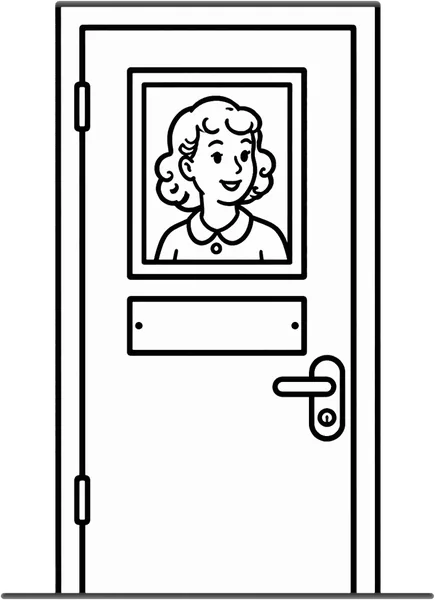

Roter Teller
Serviere das Essen auf einem roten Teller. Darauf hebt sich das Essen deutlich ab.
Passt zu: „Ich habe schon gegessen.“
Kleine Dinge im Alltag machen oft einen großen Unterschied. Hier findest du 54 einfache Tricks, die viele Familien nutzen, jeder mit einer Zeichnung. Probiere aus, was zu euch passt.
Serviere das Essen auf einem roten Teller. Darauf hebt sich das Essen deutlich ab.
Passt zu: „Ich habe schon gegessen.“

Lege eine einfarbige Unterlage auf den Tisch und räume Muster, Deko und Gläser weg. So bleibt nur das Essen im Blick.
Passt zu: „Ich habe schon gegessen.“

Stelle nur Teller und Besteck hin. Das nächste Gericht kommt erst, wenn das erste weg ist.
Passt zu: „Ich habe schon gegessen.“
Schneide Brot, Obst und Gemüse in kleine Stücke zum Greifen. Dann braucht es kein Besteck.
Passt zu: „Ich habe schon gegessen.“

Setz dich dazu und iss selbst mit. Viele machen einfach nach, was sie sehen.
Passt zu: „Ich habe schon gegessen.“

Lege statt Messer und Gabel nur einen Löffel hin. Das ist einfacher zu greifen.
Passt zu: „Ich habe schon gegessen.“

Koche etwas, das die Person von früher kennt. Der Duft aus der Küche macht oft neugierig.
Passt zu: „Ich habe schon gegessen.“

Nimm einen bunten Becher, der sich vom Tisch abhebt, und fülle ihn nur halb voll.

Stelle in jedem Raum ein gefülltes Glas oder eine Tasse hin, die man gut sieht.

Nimm selbst ein Glas und stoße an. Gemeinsam trinken fällt leichter.

Ein farbiger Toilettensitz hebt sich vom weißen Becken ab. So findet man ihn leichter.
Passt zu: „Ich muss nicht aufs Klo.“

Hänge ein Bild einer Toilette in Augenhöhe an die Tür und lasse die Tür offen stehen.
Passt zu: „Ich muss nicht aufs Klo.“ · Nachts aufstehen

Ein Nachtlicht mit Bewegungsmelder zeigt nachts den Weg zur Toilette.
Passt zu: Nachts aufstehen · „Ich muss nicht aufs Klo.“

Wärme das Bad vor und lege ein großes Handtuch um die Schultern. Decke beim Waschen ab, was gerade nicht dran ist.
Passt zu: „Ich will nicht duschen.“

Summt oder singt zusammen ein Lied, das die Person mag. Das lenkt ab und macht es freundlicher.
Passt zu: „Ich will nicht duschen.“

Beginne mit einem warmen Waschlappen an Händen und Gesicht. Der Rest folgt später oder ein anderes Mal.
Passt zu: „Ich will nicht duschen.“

Putze dir neben der Person die Zähne. Sie macht oft einfach mit.

Creme der Person die Hände ein. Das ist eine ruhige Berührung, für die es keine Worte braucht.
Passt zu: „Lass mich in Ruhe!“

Mit einem Duschhocker kann die Person im Sitzen duschen. Das gibt Halt und ist weniger anstrengend.
Passt zu: „Ich will nicht duschen.“

Hänge eine große Uhr auf, die Wochentag und Datum zeigt, dort wo die Person oft sitzt.
Passt zu: „Wann gehen wir?“ · „Ich bleibe heute im Bett.“

Schreibe die Antwort in großer Schrift auf einen Zettel. Bei der nächsten Frage zeigst du darauf.
Passt zu: „Wann gehen wir?“

Schreibe auf eine Tafel, was heute ansteht, groß und mit wenigen Wörtern. Streiche Erledigtes gemeinsam durch.
Passt zu: „Wann gehen wir?“ · „Ich bleibe heute im Bett.“

Schaut zusammen ein Album mit alten Fotos an. Bilder von früher geben Gesprächsstoff.
Passt zu: „Wo ist meine Mutter?“ · „Wo sind meine Kinder?“

Stelle Fotos der Familie auf und schreibe die Namen in großer Schrift dazu.
Passt zu: „Wer sind Sie?“

Klebe außen auf Schränke und Schubladen ein Bild von dem, was darin liegt.
Passt zu: „Ich ziehe mich nicht um.“

Öffne morgens die Vorhänge und lasse Tageslicht herein. Das markiert den Beginn des Tages.
Passt zu: „Ich bleibe heute im Bett.“

Gib Schlüsseln, Brille und Geldbeutel einen festen, sichtbaren Platz, zum Beispiel ein Schlüsselbrett.
Passt zu: „Du hast mein Geld gestohlen.“

Plane vormittags einen kurzen Spaziergang ein. Frische Luft und Tageslicht gehören für viele zum Tagesrhythmus.
Passt zu: Nachts aufstehen · „Es wird dunkel, ich muss los.“

Mache jeden Abend dasselbe in derselben Reihenfolge, zum Beispiel Tee, Waschen, Lieblingslied. Das gibt Halt.
Passt zu: „Es wird dunkel, ich muss los.“ · Nachts aufstehen

Schalte am Abend die Lampen an und ziehe die Vorhänge zu. So gibt es keine dunklen Ecken und keine Spiegelungen.
Passt zu: „Es wird dunkel, ich muss los.“ · „Da ist jemand im Zimmer.“

Schalte den Fernseher aus und spiele leise Musik, die die Person kennt.
Passt zu: „Es wird dunkel, ich muss los.“ · „Lass mich in Ruhe!“

Ein Armband oder eine Karte in der Jacke mit Namen und deiner Telefonnummer hilft, wenn die Person allein unterwegs ist.
Passt zu: „Es wird dunkel, ich muss los.“ · „Lass mich nicht allein.“

Hänge eine Glocke oder einen Türmelder an die Wohnungstür. So hörst du, wenn jemand hinausgeht.
Passt zu: „Es wird dunkel, ich muss los.“ · Nachts aufstehen

Mache ab und zu ein neues Foto der Person und halte es griffbereit. Sage den Nachbarn Bescheid.
Passt zu: „Es wird dunkel, ich muss los.“

Hänge Mantel, Schuhe und Schlüssel in einen Schrank. Was man nicht sieht, erinnert nicht ans Gehen.
Passt zu: „Es wird dunkel, ich muss los.“ · „Ich will Auto fahren.“

Hänge ein Tuch über den Spiegel oder nimm ihn aus dem Raum.

Gib der Person ein Portemonnaie mit etwas Kleingeld, das sie behalten darf.
Passt zu: „Du hast mein Geld gestohlen.“

Hänge in Sichtweite einen Haken auf. Die Jacke hängt dort sichtbar, und die Person holt sie selbst, wenn sie hinaus möchte.

Lege die Kleidung in der Reihenfolge zum Anziehen hin, das Erste oben.
Passt zu: „Ich ziehe mich nicht um.“ · „Ich bleibe heute im Bett.“

Schuhe mit Klettverschluss und Hosen mit Gummibund lassen sich leichter anziehen.
Passt zu: „Ich ziehe mich nicht um.“

Stelle die Schuhe so hin, dass die Spitzen zur Person zeigen und sie hineinschlüpfen kann.

Gib der Person eine Kiste mit ungefährlichen Dingen zum Sortieren, zum Beispiel Socken, Wäscheklammern oder Stoffreste.
Passt zu: „Ich muss zur Arbeit.“

Bitte um Hilfe beim Falten von Handtüchern. Eine bekannte Handarbeit gibt das Gefühl, gebraucht zu werden.
Passt zu: „Ich muss zur Arbeit.“ · „Lass mich nicht allein.“

Setze dich dazu und halte die Hand der Person. Eine ruhige Berührung braucht keine Worte.
Passt zu: „Lass mich in Ruhe!“ · „Du hast einen anderen.“

Spiele oder summe ein Lied aus der Jugend der Person. Alte Lieder kennen viele Menschen noch Wort für Wort.
Passt zu: „Lass mich in Ruhe!“ · „Es wird dunkel, ich muss los.“

Eine Decke mit Knöpfen, Bändern und Stoffen zum Anfassen beschäftigt unruhige Hände.
Passt zu: „Lass mich in Ruhe!“

Richte einen Platz ein, an den man sich zurückziehen kann, mit Sessel, Decke und wenig Lärm.

Biete höchstens zwei Möglichkeiten an, zum Beispiel Tee oder Kaffee. Eine offene Frage überfordert schnell.
Passt zu: „Ich will nicht duschen.“ · „Ich ziehe mich nicht um.“

Gehe auf Augenhöhe, sprich langsam und leise und nur einen Satz nach dem anderen.
Passt zu: „Lass mich in Ruhe!“ · „Wer sind Sie?“

Sage freundlich deinen Namen und wer du bist, auch zum fünften Mal am Tag.
Passt zu: „Wer sind Sie?“

Nimm zu Terminen eine Lieblingsjacke, die Handtasche oder ein Foto mit. Das gibt Sicherheit an fremden Orten.
Passt zu: „Ich gehe nicht in die Tagespflege.“

Lege Karten mit Bildern bereit, zum Beispiel Glas, Toilette, Bett. Die Person kann darauf zeigen, wenn Worte fehlen.

Verabschiede dich kurz und freundlich und schreibe die Abholzeit auf einen Zettel.
Passt zu: „Ich gehe nicht in die Tagespflege.“ · „Lass mich nicht allein.“

Bitte den Pflegedienst um feste Personen und feste Zeiten. Vertraute Gesichter machen es leichter.